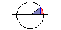
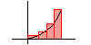
lim sin x/x (x->0)
The Rectangle Approximation Method
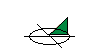
The Volume of a Solid (1)
The Volume of a Solid (2)
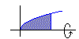
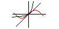
The Volume of a Solid of Revolution (1)
Visualization of limits
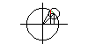
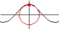
The Derivative of the Sine
Circle of Curvature
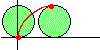
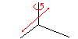
Cycloids
The Volume of a Solid of Revolution (2)
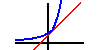
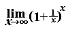
The Number e (1)
The Number e (2)
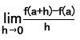
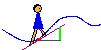
Average rate of Change and Derivatives
Surfing (Derivatives)
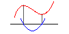
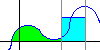
Derivatives of Cubic Functions
The Fundamental Theorem of Calculus
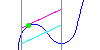
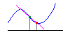
Roll's Theorem & The Mean Value Theorem
Secant Line and Tangent Line
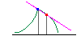
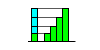
One Sided Derivative
Progression of Differences
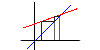
Recursion Formula
Recursion Formula(2)
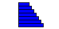
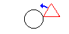
Sum of Arithmetical Progression
The locus of a Triangle
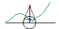
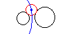
1/f(x) Generator
A Circle touching two Circles
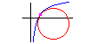
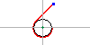
Circle of Curvature of ln x
The Involute of a Circle
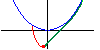
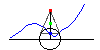
Involute of y=cosh x
f(x)+1/f(x) Generator
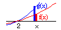
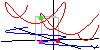
L'Hopital's Rule
Composite Functions
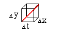
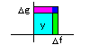
The Chain Rule
The Product Rule
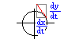
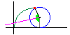
Autonomouse System
Property of Cycloid
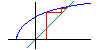
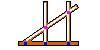
Recursion Formula(3)
Drawing Exponential Curve
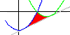
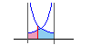
Problem of Area
Minimum value of the integral of a function
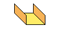
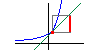
Cross Section of Gutter
Derivative of Exponential Functions
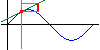
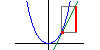
Derivative of Trigonometric Functions
Derivative of y=x^2
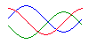
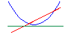
Second Derivative of Trigonometric Functions
Second Derivative of y=x^n
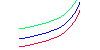
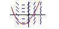
Second Derivative of Exponential Functions
First-Order Differential Equations
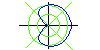
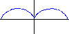
Polar Coordinates Simple Graph
Simple Graph (Parametric Function)
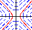
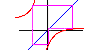
Differential Equations(Parameter)
Graph of f(f(x))=x and f(f(f(x)))=x
Problem of Maximum of Area
Problem of The Number of Tangent Line
Problem of The Number of Tangent Line(2)
Geometric Meaning of Integration of 1/x
Integration of exp(x)
Limit (exp(x)-1)/x
Derivative of exp(x)
limit log(x+1)/x
Derivative of log x
Graph of exp(ax) and Equiangle Spiral
Finding the value of root a using Newton's Method
Integration of Parameter Function
Information of Products